Heygo 是什么
Heygo 由两个传感器和 Heygo App 组成。传感器夹在两只雪鞋外侧，实时捕捉你滑行时的姿态和动作；App 里的模型和 AI 教练把这些数据变成你能听懂的反馈。它不只是记录你滑了多快多远，而是看懂你怎么滑。
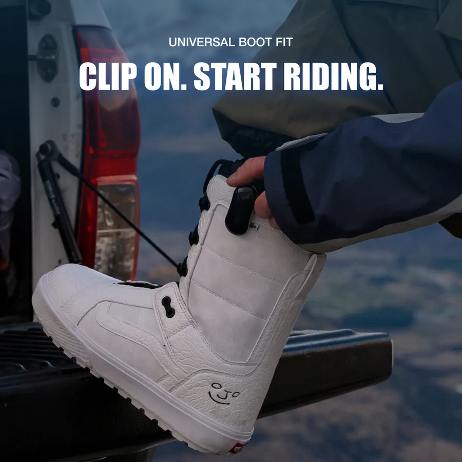
一个持续陪伴的教练循环
捕捉你自己感觉不到的细节：重心变化、施压、时机、节奏和弯型。
把细节连成背后的规律：哪里变了、什么起效了、什么在拖你后腿。
在最关键的时候给一句提示，让你在坏习惯重复之前改过来。
每一趟都会丰富你的滑手档案，滑得越多，它越懂你下一步该练什么。
硬件长什么样
每套包含左右两个传感器，背面是一体式夹子，2 秒夹上雪鞋，不需要工具。充电座一次给两个传感器充电。
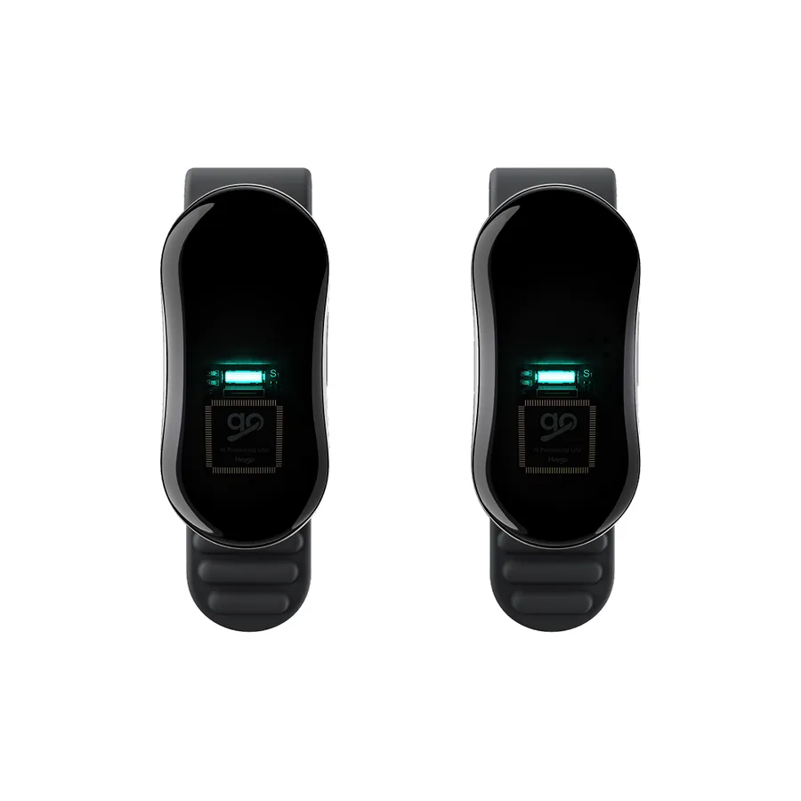
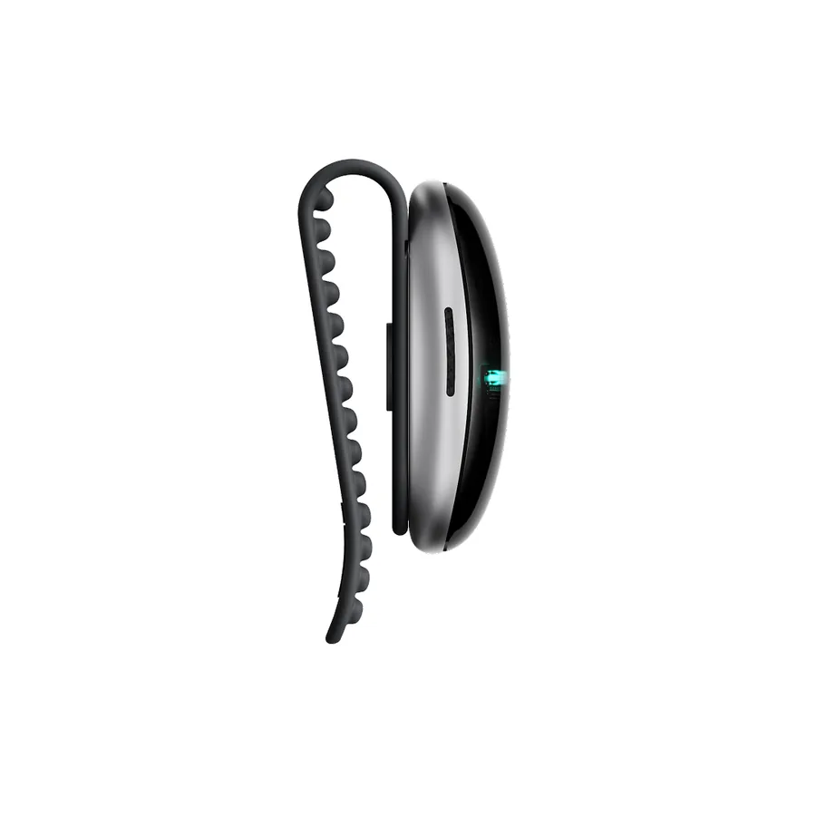
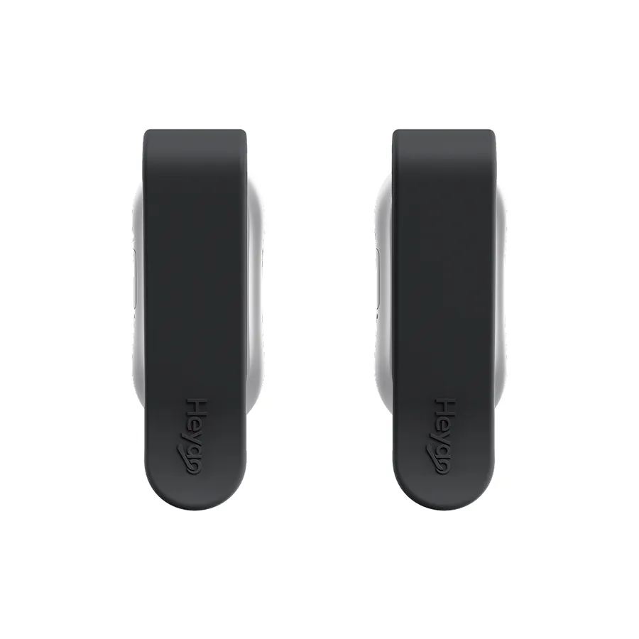
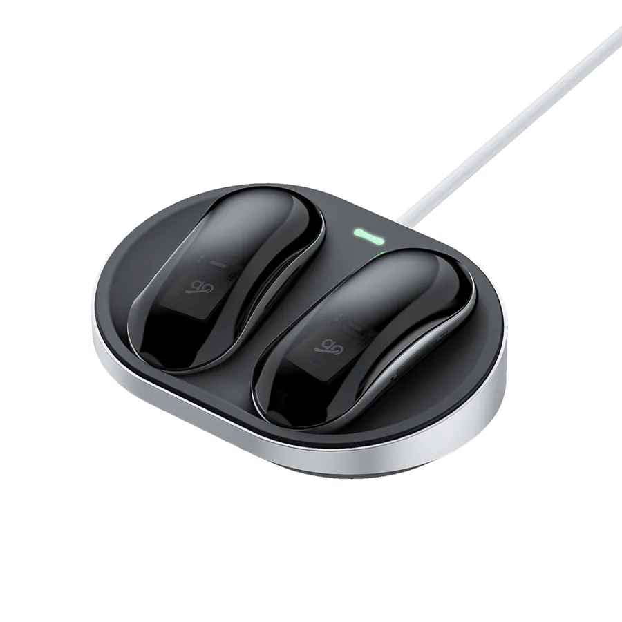
包装内有什么
- Heygo 传感器 ×2（L 左脚 / R 右脚）
- 充电座 ×1
- 夹子 ×2
- USB-C 线 ×1
- 收纳袋 ×1
- 说明书 ×1
戴在哪里
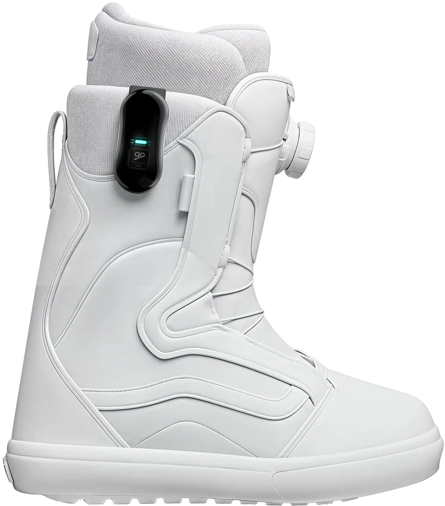
夹在雪鞋外侧、靠近脚踝的位置。左脚夹 L，右脚夹 R。
规格参数
| 尺寸（长×宽×高） | 58 × 25 × 20 mm（单个传感器，不含夹子） |
|---|---|
| 重量 | 约 52 g（传感器 + 夹子，目标值） |
| 电池 | 160 mAh / 个 |
| 续航 | 最长约 7 天 |
| 充电 | 约 1.5 小时充满；USB-C 接充电座，传感器通过弹簧针触点充电 |
| 工作温度 | -20°C 至 45°C |
| 防尘防水 | IP68 |
| 连接 | 蓝牙低功耗（BLE）直连手机 |
| 采样 | 主运动数据 100 Hz：加速度、角速度、气压、姿态四元数等 |
| 传感器 | IMU 惯性测量单元、气压计 |
| 离线缓存 | 约 2 小时（128 Mbit Flash），断连后自动补传 |
| 保修 | 1 年有限保修 |
参数以官网 heygo.ai 公布为准。
上手 6 步
- 先充电
把两个传感器放进充电座并接上电源。配对和固件升级都需要它们在座上，所以从这一步开始。
- 下载 App 并登录
在 App Store 或 Google Play 下载 Heygo。iOS 可用 Apple、Google 或邮箱登录；Android 可用 Google 或邮箱登录。
- 扫包装盒上的码
包装上的二维码就是这套设备的配对码，会把设备绑定到你的账号，盒子请留好。
- 连接并升级固件
传感器放在座上，点「连接」，然后马上做一次固件升级：在家几分钟，在山上差不多半趟缆车。
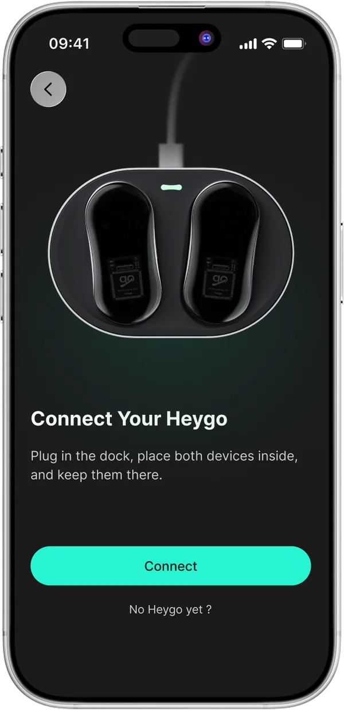
- 设置站姿
填好名字、站姿、水平等基础信息。Regular（左脚在前）还是 Goofy（右脚在前）一定要选对，前刃 / 后刃的判断都依赖它。
- 夹上就滑
L 夹左脚、R 夹右脚，夹在雪鞋外侧。打开 App，在 Go 页面滑动开始，手机放回口袋就可以滑了。最初几个弯是 Heygo 在自动校准，大约第四个弯就会听到第一条教练语音。
使用小贴士
- 夹在雪鞋外侧，夹紧不晃。设备松动会影响角度准确性；鞋壳特别薄或特别厚时，建议加固定绑带。
- L / R 别装反：左右脚装反会让前后刃判断全部颠倒。
- 手机放在身上（口袋里即可），和设备保持在蓝牙范围内。
- 想听实时语音就戴上任意耳机；不想被打扰可以选「静音」模式，滑完再看报告。
- 山上信号差也没关系：核心功能离线可用，联网后报告会补上。
- 每晚放回充电座充电；低温下耗电更快，留意低电量提醒。
一次滑行，Heygo 怎么陪你
从出发到收工，Heygo 在每个时刻都有不同的角色。
选好教练模式：详细 / 简洁 / 静音。
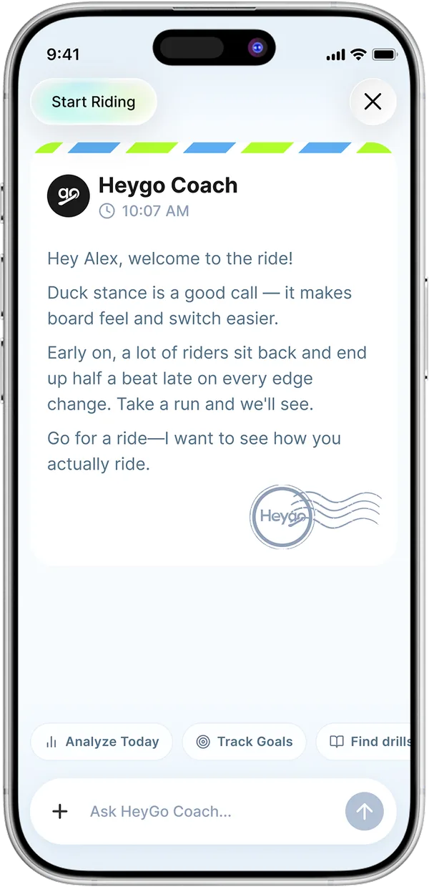
戴着耳机，教练在耳边：发现问题时提醒你，改对了告诉你，摔倒了问一句「还好吗」。
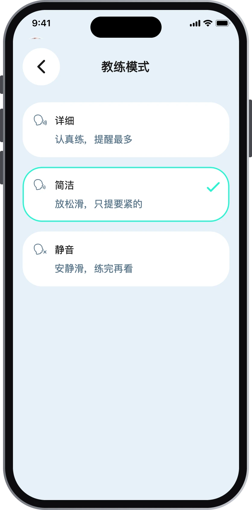
单趟报告自动生成：这趟滑得怎么样、做得好的地方、下一趟练什么，附示范视频。
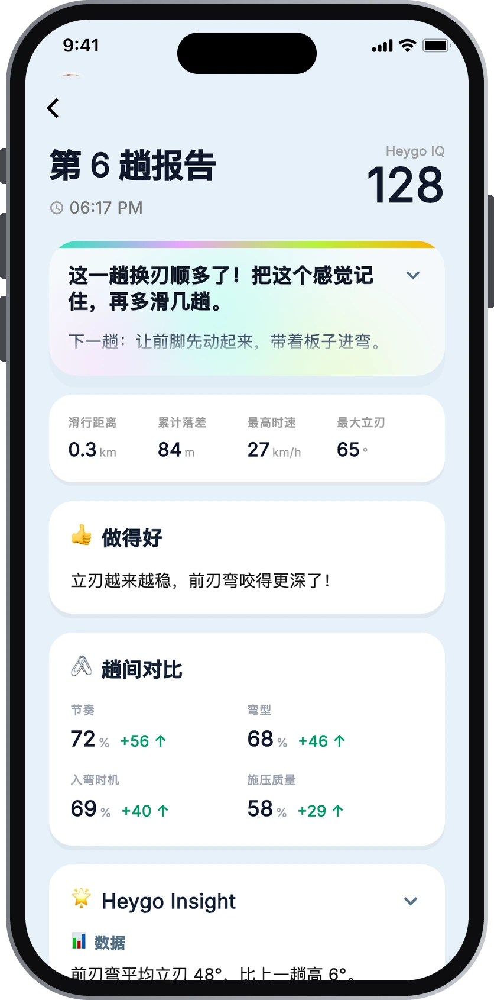
每趟自动切成片段，看 Heygo IQ、四维雷达、进阶指标和最佳弯形。
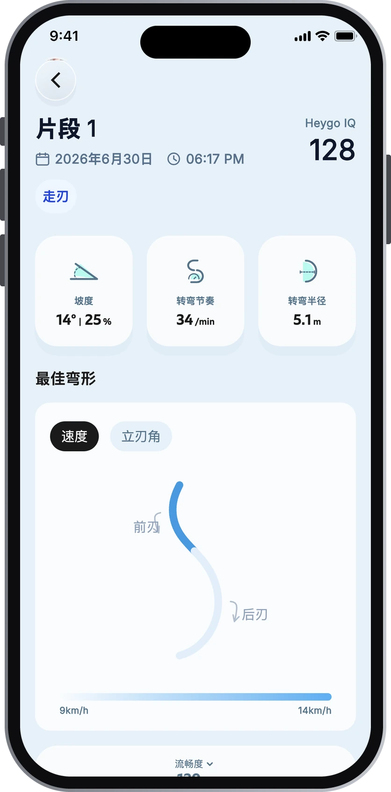
生成雪日报告：全天数据、IQ 变化、今日亮点和下次训练建议。
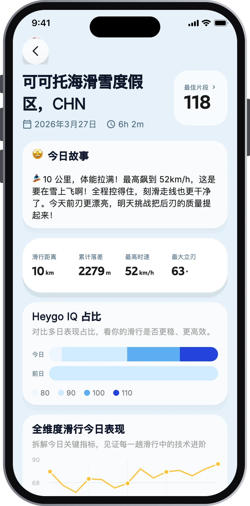
和 AI 教练聊：它记得你每一趟的数据和之前的对话。
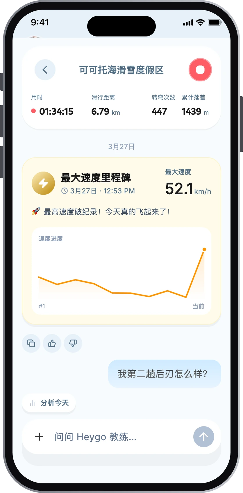
← 左右滑动 →
不同阶段，怎么用 Heygo
Heygo IQ 是 0–200 的滑行能力分。不同阶段的滑手，从 Heygo 得到的东西不一样。
Heygo 以「弯」为单位分析技术，所以要能连续换刃之后才真正有用。
刚学会换刃
- 你可能是这样
- 能连续换刃了，以搓雪为主，大多时候自己练，身边没有教练也没人拍视频。
- 你的困扰
- 不知道刚才哪里不对，也不知道下一趟该练什么。
- 这样用 Heygo
- 教练模式选详细，让它多提醒
- 每趟坐缆车看一眼单趟报告最上面的总结和推荐练习
- 跟着示范视频练一个动作
- 摔倒、换刃犹豫、甩板尾都会被提醒
- 带来的改变
- 每一趟都知道下一趟练什么，少走弯路，也少花冤枉的教练钱。
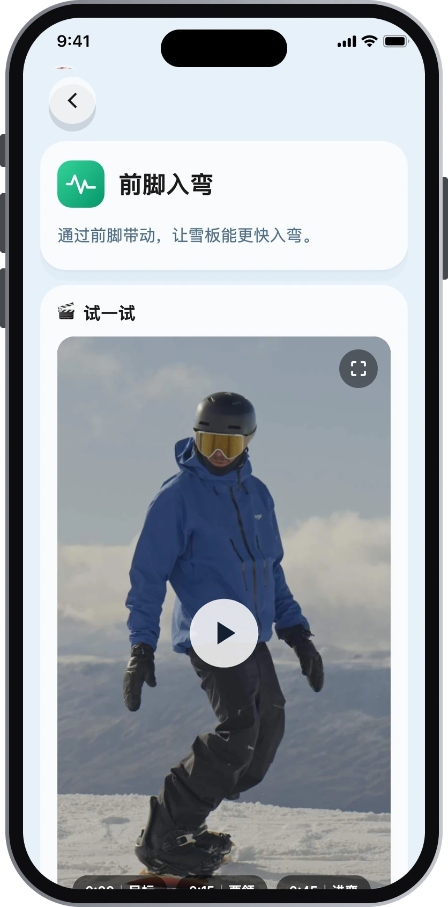
“我想要一个能在滑的时候真正教我的东西。Heygo 每一趟都会给我下一趟练什么，这正是我需要的。”— Icelyn
“滑的时候我常常意识不到自己哪里做错了，而且大多数人不可能一直有教练跟着。Heygo 会指出我能改进的小地方，真的很有用。”— Summer
业余爱好者
- 你可能是这样
- 搓雪小回转比较稳，开始尝试走刃，一个雪季滑很多天，想滑得更好看、更稳。
- 你的困扰
- 卡在瓶颈：小回转不顺、后刃总不对劲，练了一阵也说不清有没有进步。
- 这样用 Heygo
- 看片段：Heygo 会自动分出哪段在搓雪、哪段在走刃、哪段在反脚
- 盯住Heygo IQ，和上一趟、昨天比
- 收工生成雪日报告，看问题有没有改善
- 在缆车上问AI 教练：「我后刃弯为什么收不住？」
- 带来的改变
- 找到具体的瓶颈，进步看得见，像有一位记得你所有滑行的私教。
“我每趟滑完都会看分数，它让我想在下一趟做得更好，有点像游戏升级，滑雪也更好玩了。”— Kenny
“我喜欢一个人滑，但没人拍的话很难知道自己的弯到底是什么样。有了 Heygo，滑完看一眼弯型就行，简单但很有用。”— Liu
“我常常一个人滑，滑雪其实挺孤独的。Heygo 帮我记录每一趟，我不用再依赖朋友或者有人拍，在山上更独立了。”— Sophia
进阶滑手
- 你可能是这样
- 能稳定走刃、刻滑，开始抠细节：立刃够不够早、施压时机准不准、前后刃是否对称。
- 你的困扰
- 这些细节靠体感和视频很难判断，改了也说不清有没有效果。
- 这样用 Heygo
- 看进阶指标：时机、施压、流畅度、相似度 4 个维度 13 项
- 看弯型：弯是否圆润、是否收完、前后刃是否对称
- 一趟只练一个点，用数据验证改动有没有起效
- 教练模式选简洁，只在要紧时提醒
- 带来的改变
- 把「感觉」变成可以对比、可以复盘的数据，精进每一个细节。
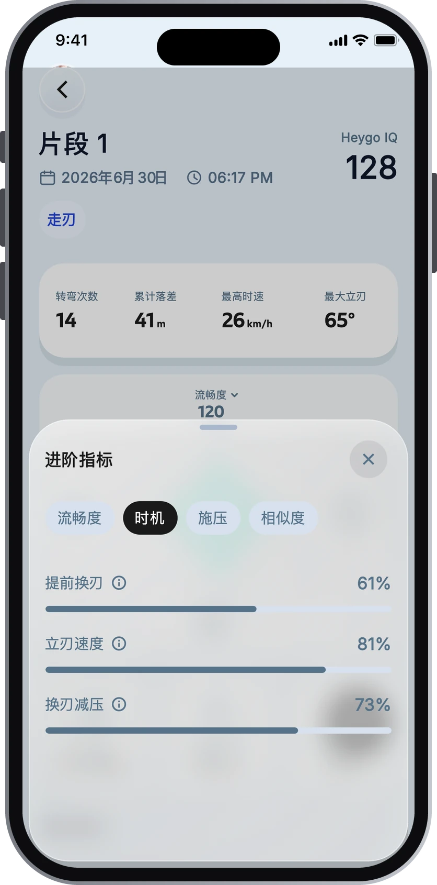
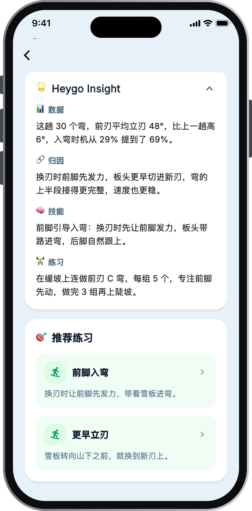
“Heygo 提醒我换刃别着急。下一趟我照着试了，真的感觉到进步。它更像一个真教练，而不只是一个 App。”— Vacant
“它显示我的最大立刃角接近 80 度，非常准。Heygo 能这么准确地捕捉到，让我很惊讶。”— Coffee
专家与教练
- 你可能是这样
- 高水平刻滑，或者是带学员的教练，关心的不只是自己，还有学员课后怎么练。
- 你的困扰
- 学员课后自己练时没人盯；讲解时缺少客观依据；自己的细节也想量化。
- 这样用 Heygo
- 让学员戴着练，课后一起看单趟报告和弯型
- 用进阶指标给讲解提供依据：哪个弯、哪只脚、哪项指标
- 自己滑时看前后刃相似度和立刃流畅度，抠极致细节
- 赛事、俱乐部场景：量化每位选手的弯型对称性、施压点和换刃点
- 带来的改变
- 多一双盯着学员的眼睛，讲解有数据，复盘更清楚。
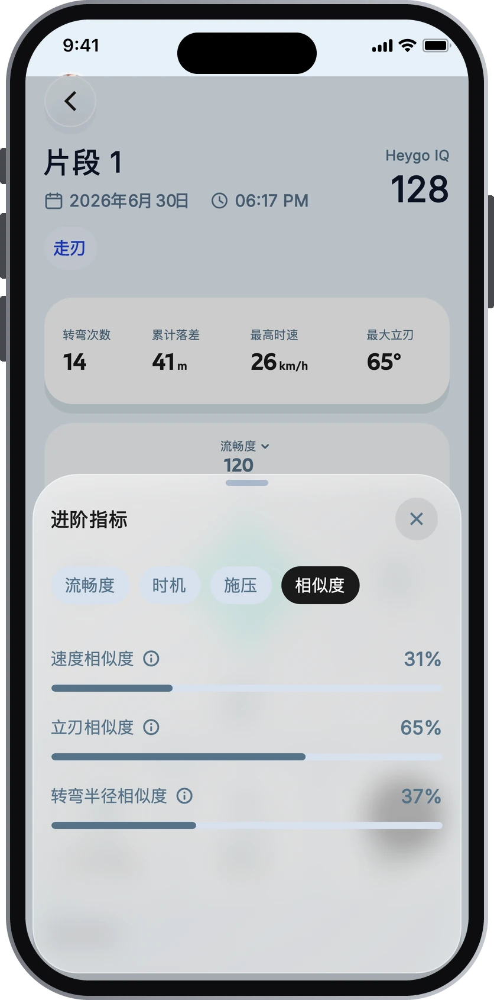
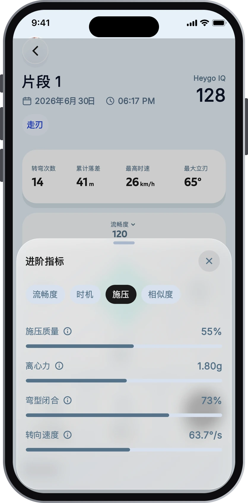
“我是滑雪教练，Heygo 对教学也很有用。哪天我没法陪学员滑，Heygo 也能跟着他们、给他们反馈。”— Rock
“作为教练，我觉得 Heygo 很适合学员自己练习的时候用。它能解释哪里出了问题，我也能用这些数据给出更好的反馈。”— Tommy
一张表看清楚
| 刚学会换刃 | 业余爱好者 | 进阶滑手 | 专家与教练 | |
|---|---|---|---|---|
| Heygo 的角色 | 陪练 | 私教 | 数据分析师 | 教学助手 |
| 最常用 | 实时语音、推荐练习 | 片段、IQ、雪日报告、AI 对话 | 进阶指标、弯型 | 报告复盘、进阶指标 |
| 推荐教练模式 | 详细 | 详细 / 简洁 | 简洁 | 简洁 / 静音 |
常见问题
Heygo 能用于双板吗？
目前 Heygo 专为单板滑雪设计和开发，暂不支持双板。
所有雪鞋都能夹吗？
夹子式设计适配大多数主流单板雪鞋，但不保证 100% 适配。鞋壳特别薄或特别厚时可能夹不稳，建议加固定绑带。
和运动手表有什么区别？
手表主要记录心率、速度、距离和路线。Heygo 关注的是你的身体和雪板怎么动：立刃、施压、时机、弯型，告诉你「怎么滑」，而不只是「滑了多快多远」。
没网能用吗？
可以。核心功能在弱网或无网时仍可用，报告会在恢复联网后补上。
充一次电能用多久？
最长约 7 天。建议每晚放回充电座，低温环境下耗电会更快。
完全不会滑能用吗？
Heygo 以「弯」为单位分析技术，所以能连续换刃之后才真正发挥作用。还在学站立、推坡的阶段，它能记录滑行和摔倒，但还分析不出技术问题。